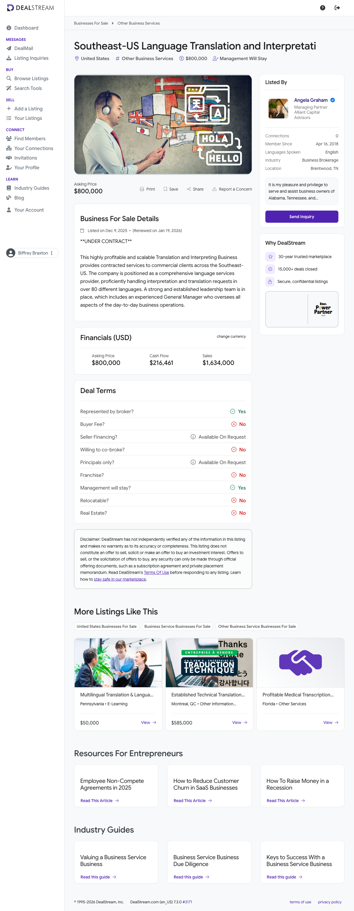

Strengths
- Direct NAICS 541930 fit — clean add-on for Applied Development
- 80+ languages — broad coverage useful to a platform
- Experienced GM in place; low owner dependence
- Attractive 3.70x SDE entry multiple
| # | Criterion | Status | Evidence |
|---|---|---|---|
| 1 | ≥ 10 full-time employees | INSUFF. | Listing names an experienced General Manager; total FTE not disclosed. Firms this size typically run a small salaried core plus a large 1099 linguist pool. Needs broker follow-up. |
| 2 | EBITDA $1M–$4M / year | FAIL | Listing discloses Cash Flow (SDE) of $216,461 — well below the $1M floor. SDE used as EBITDA proxy. |
| 3 | 10+ years in business | INSUFF. | Founding date not disclosed in the anonymized listing; no public company match found. Needs broker follow-up. |
| 4 | 3+ yrs YoY revenue & profit growth | INSUFF. | No per-year (2024/2025) revenue or profit split disclosed. Cannot evaluate — needs broker follow-up. |
| 5 | Asking price ≤ 4.0x EBITDA | PASS | $800,000 ÷ $216,461 SDE = 3.70x — inside the 4.0x ceiling (multiple is on SDE, not normalized EBITDA). |
| 6 | DSCR > 1.4 (informational) | INSUFF. | Cannot compute — no financing structure modeled and EBITDA unconfirmed. Informational only; not scored. |
Overall Buy Box: FAIL (standalone) / CONDITIONAL (add-on). Does not meet standalone EBITDA thresholds (SDE $216K vs $1M floor), but qualifies as a roll-up add-on for Applied Development on a direct industry match, an in-place GM, and a 3.70x entry multiple. Primary blocker is the UNDER CONTRACT status; three of six checks are unverifiable from the anonymized listing.
| # | Field | Value | Source |
|---|---|---|---|
| 1 | Business Name | Southeast-US Language Translation and Interpreting Business (anonymized confidential listing — true identity not disclosed) | DealStream c5bsbj |
| 2 | Lead Source | DealStream listing c5bsbj; brokered by Alliant Capital Advisors | DealStream / Alliant |
| 3 | Years in business | Not disclosed — needs broker follow-up | — |
| 4 | Real estate owned | None disclosed (interpreting businesses are typically asset-light / leased) | — |
| 5 | FF&E value | Not disclosed | — |
| 6 | Full-time employees | Not disclosed; GM confirmed in place. Likely small salaried core + large 1099 interpreter pool | DealStream / industry norm |
| 7 | Part-time employees | Not disclosed | — |
| 8 | Contractors / 1099 | Not disclosed; an 80+-language roster is almost certainly delivered largely via 1099 contract linguists | Industry norm (NAICS 541930) |
| 9 | Business address | Southeast US — exact state/metro not disclosed | DealStream |
| 10 | Revenue 2022 | Not disclosed — needs broker follow-up | — |
| 11 | Revenue 2023 | Not disclosed — needs broker follow-up | — |
| 12 | Revenue 2024 | Not disclosed — needs broker follow-up (do not fabricate) | — |
| 13 | Revenue 2025 | Not disclosed; listing gives trailing Gross Revenue of $1,634,006 without a year label | DealStream / Alliant |
| 14 | Net / FCF 2022 | Not disclosed | — |
| 15 | Net / FCF 2023 | Not disclosed | — |
| 16 | Net / FCF 2024 | Not disclosed | — |
| 17 | Net / FCF 2025 | Not disclosed; listing gives trailing Cash Flow (SDE) of $216,461 without a year label | DealStream / Alliant |
| 18 | Asking price | $800,000 | DealStream / Alliant |
| 19 | % revenue growth YoY | Cannot compute — no per-year revenue disclosed | computed |
| 20 | Yearly revenue retention | Not disclosed | — |
| 21 | EBITDA margin | 13.2% SDE margin ($216,461 ÷ $1,634,006) — below 15% criterion; true EBITDA margin lower after owner-comp normalization | computed |
| 22 | Customer LTV | not disclosed | — |
| 23 | Customer CAC | not disclosed | — |
| 24 | Client concentration | Not disclosed — needs broker follow-up | — |
| 25 | 2024 financials + YTD link | Not available — confidential; released to buyers under NDA | — |
| 26 | Lead Score | 55 / 110 | computed |
No values are tagged (est.) — all financials are taken directly from the listing; missing fields are left explicitly blank rather than guessed, per skill rules.
| Item | Awarded | Max | Justification |
|---|---|---|---|
| Industry match | 20 | 20 | Direct hit — translation & interpretation services, NAICS 541930. 80+ languages, commercial interpretation + translation. Exactly the Applied Development target space. |
| EBITDA tier (non-cumulative) | 0 | 15 | SDE of $216,461 is in the ≤$1M tier → 0 pts. SDE used as proxy; normalized EBITDA would be lower. |
| Years in business ≥10 | 0 | 10 | Founding date not disclosed and no public match found — insufficient data, not awarded. |
| 3 yrs consistent growth | 0 | 10 | No per-year revenue/profit split disclosed — insufficient data, not awarded. |
| Recurring revenue | 5 | 10 | Commercial-client interpretation/translation is typically repeat work, but no contracted-MRR or retainer mix disclosed → mixed → 5 pts. |
| Customer concentration <20% | 0 | 5 | Largest-customer share not disclosed — insufficient data, not awarded. |
| Employees ≥10 | 0 | 10 | FTE count not disclosed — insufficient data, not awarded. GM confirmed; full headcount unknown. |
| Valuation multiple | 15 | 15 | $800K ÷ $216,461 SDE = 3.70x — inside the ≤4.0x band → full 15 pts. |
| Low owner dependence | 5 | 5 | Experienced General Manager in place; management staying post-sale → not owner-dependent. |
| Roll-up / add-on strategic fit (BONUS) | 10 | 10 | Direct add-on for Applied Development — same NAICS 541930, complementary spoken/foreign-language capability, 80+ languages expand platform reach. |
| Total | 55 | 110 |
Scored as a roll-up add-on for Applied Development; no size floor applied. Three of the zero lines (years, growth, employees, concentration) are zero purely because the anonymized listing withholds the data — not because the business failed. Confirming founding date, headcount, per-year financials, and concentration could move the score to roughly 80–85/110 if those checks pass. Interpretation band: 50–69 → Review with partner before spending time.
Background and history: A translation and interpreting services provider serving commercial clients across the Southeast US, offering 80+ languages. Sold as a confidential listing — legal name, founding date, and exact location withheld pending NDA. No public company match could be identified from the disclosed attributes.
Ownership structure: Not disclosed. Run by Alliant Capital Advisors as intermediary, typically indicating a single-owner or family-owned private company seeking exit.
Key milestones: 2025-12-08/09 — listed on DealStream (c5bsbj). 2026-01-19 — listing renewed. On/before 2026-05-21 — moved to UNDER CONTRACT.
Organizational structure: An experienced General Manager runs daily operations; management will remain post-sale. Delivery is almost certainly a small salaried coordination/PM core plus a contracted linguist network — standard for an 80+-language interpreting operation.

The seller and General Manager are not named in the confidential listing. The only identified principal is the sell-side broker.
Seller and GM to be identified during NDA-gated diligence.
Descriptions: Spoken-language interpretation and written translation in 80+ languages, sold to commercial (B2B) clients. The breadth implies on-demand / scheduled interpreting (phone, video remote, and/or on-site) plus document translation.
Pricing model: Not disclosed. Industry norm is per-hour or per-minute for interpretation and per-word for translation, often with minimums and scheduled-account arrangements.
Differentiators: Breadth of language coverage (80+), an established commercial-client base, and an in-place GM providing continuity. No certifications (ISO 17100, ATA corporate membership) or proprietary technology disclosed.
Industry size and trends: The global language services market is estimated at roughly $58B–$79B for 2025 depending on source (Mordor ~$72B; Coherent ~$79B). The US Translation Services industry (IBISWorld, NAICS 54193) has grown ~4.1% CAGR 2020–2025; forward global forecasts run 5–9% CAGR. Translation contributes ~43% and interpretation ~32% of category revenue.
Drivers and barriers: Drivers — demand for healthcare, legal, and government language access; immigration-driven demand for less-common languages. Headwinds — AI machine translation is compressing pricing on commodity translation; interpretation (rare languages, legal/medical settings) is more defensible against AI substitution.
Competitive landscape: LanguageLine Solutions / large national LSPs (enterprise-scale OPI/VRI, set price floors); regional LSPs such as ALTA Language Services (mid-market commercial/government accounts); small independent translation/interpreting firms — the target's peer set, typically trading at ~2.5x–4.0x SDE for sub-$1M-SDE deals.
Segments: Commercial (B2B) clients in the Southeast US; specific verticals not disclosed.
Retention: Not disclosed.
Recurring vs one-time: Not disclosed. Commercial interpretation/translation is typically repeat business and frequently account-based, but no contracted/retainer percentage was provided — treated as mixed in scoring.
Top customer concentration: Not disclosed — a key diligence item. Small LSPs frequently carry meaningful concentration in one or two anchor accounts (a hospital system, a court).
| Year | Revenue | EBITDA / SDE | Margin | YoY |
|---|---|---|---|---|
| 2022 | Not disclosed | Not disclosed | — | — |
| 2023 | Not disclosed | Not disclosed | — | — |
| 2024 | Not disclosed | Not disclosed | — | — |
| Trailing (year label not given) | $1,634,006 | $216,461 (SDE) | 13.2% (SDE) | — |
No per-year history was disclosed, so the YoY trend cannot be assessed and the 3-year-growth Buy Box check is unverifiable. The single trailing point shows $1.63M revenue at a 13.2% SDE margin — modestly below the 15% EBITDA-margin criterion even before owner-comp normalization. Obtaining 3–5 years of P&Ls is the single most important diligence step.
Implied multiple at ask: 3.70x SDE ($800,000 ÷ $216,461). Comparable small LSPs trade ~2.5x–4.0x SDE; 3.70x is at the upper end of the small-firm range but within Biffrey's 4.0x ceiling. A conservative entry would be $540K–$760K (2.5x–3.5x SDE). The multiple is on SDE, not normalized EBITDA — after deducting a market GM salary the effective EBITDA multiple is higher than 3.70x.
Expansion potential: As an Applied Development add-on, the 80+-language roster and Southeast commercial accounts extend platform language coverage and regional footprint. Standalone, the firm is sub-scale.
Operational upside: Margin expansion via account-based/contracted pricing, VRI/OPI technology adoption, G&A consolidation into the platform, and owner-comp normalization. Process installation on a GM-run base is straightforward.
Strategic opportunities: Classic roll-up tuck-in — absorb the linguist network and client list into Applied Development, cross-sell platform services (sign language, CART) into acquired commercial accounts, consolidate back-office.
100-day plan sketch (if pursued and available): (1) NDA, then obtain 3–5 years of P&Ls, tax returns, and a customer-concentration schedule. (2) Re-underwrite at a normalized GM salary; confirm the effective EBITDA multiple and renegotiate if >4.0x. (3) Lock GM and top linguists with retention agreements; audit 1099 classification. (4) Integrate scheduling/billing into Applied Development systems; map cross-sell. (5) Shift commodity translation toward AI-assisted workflows to lift margin.
No (est.)-tagged values appear in the scorecard. Computed (non-estimated) figures:
Field #21 — EBITDA margin — 13.2%. Method: $216,461 SDE ÷ $1,634,006 revenue = 0.1324. Labeled an SDE margin, not a normalized EBITDA margin.
Implied multiple — 3.70x. Method: $800,000 asking price ÷ $216,461 SDE = 3.696x.